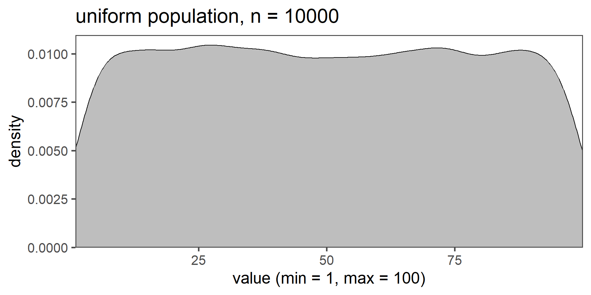

Introduction
The End of Theory?

References
Fung, Kaiser. 2013. Numbersense: How to Use Big Data to Your Advantage. McGraw Hill Professional.
Luraschi, Javier, Kevin Kuo, and Edgar Ruiz. 2019. Mastering Spark with r.
Nast, Condé. 2024. “The End of Theory: The Data Deluge Makes the Scientific Method Obsolete | WIRED.” https://www.wired.com/2008/06/pb-theory/.
Schäfer, Franziska, Andreas Mayr, Andreas Hess, Christian Zeiselmair, Heiner Otten, and Jörg Franke. 2019. “Six Sigma 4.0: Data Mining Als Unterstützende Technologie Im Null-Fehler-Management.” Zeitschrift Für Wirtschaftlichen Fabrikbetrieb 114 (3): 140–44. https://doi.org/10.3139/104.112047.
Wiegand, Wayne A., and Donald G. Jr. Davis. 1994. Encyclopedia of Library History. 1st ed. Routledge. https://doi.org/https://doi.org/10.4324/9781315056982.